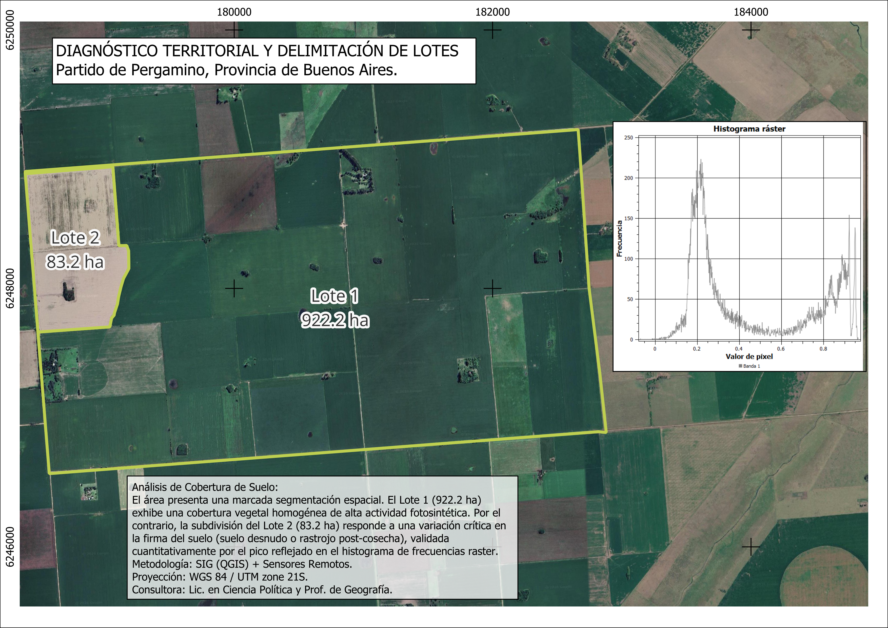
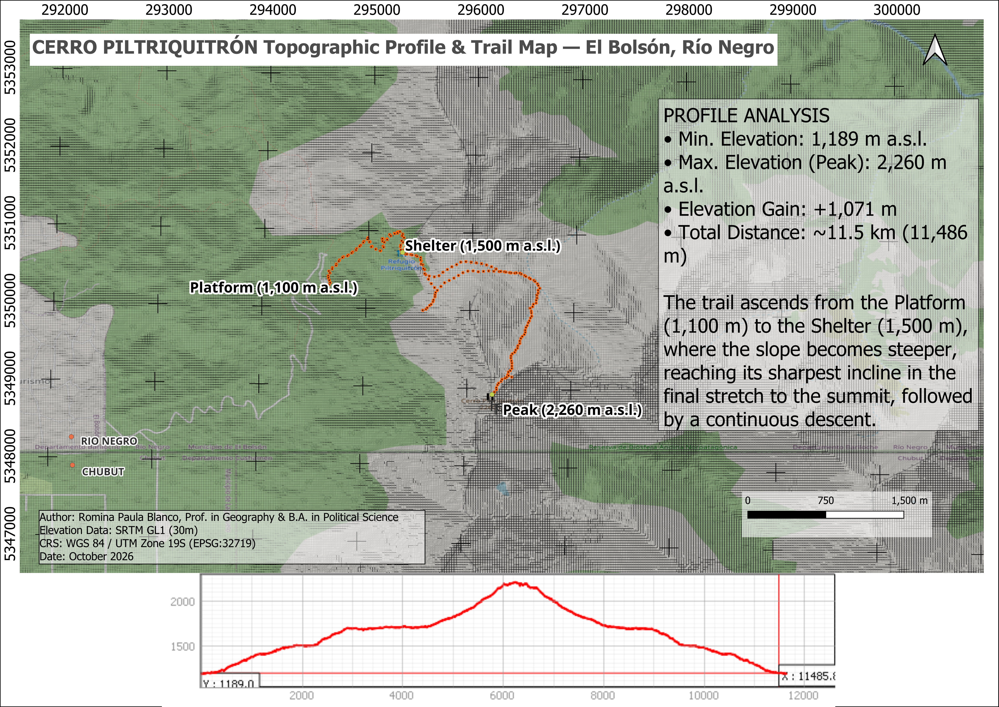
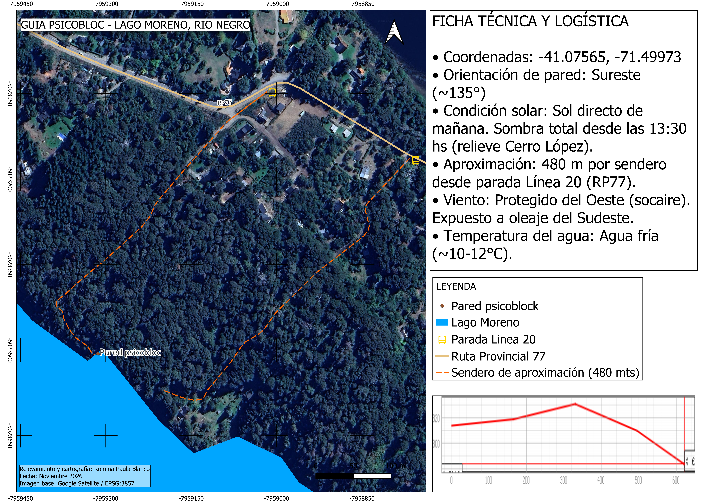
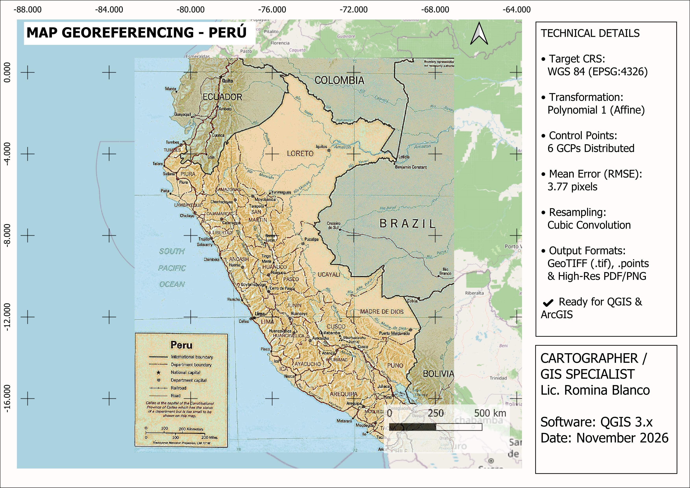

Diagnóstico Territorial y Delimitación de Lotes (Pergamino)
Delimitación de parcelas productivas (922.2 ha y 83.2 ha) y análisis de cobertura vegetal mediante sensores remotos en QGIS, validado cuantitativamente con histograma de frecuencias ráster.

Mapa de Usos del Suelo (Municipio Presidente Perón)
Cartografía temática urbana y periurbana elaborada con fuentes del IGN y OSM bajo sistema POSGAR 2007 / Argentina 5, clasificando zonas comerciales, industriales, agrícolas y de expansión residencial.

Perfil Topográfico y Senderismo (Cerro Piltriquitrón, El Bolsón)
Modelado digital de elevación basado en datos SRTM GL1 (30 m). Análisis de recorrido de 11.5 km y +1,071 m de desnivel positivo hasta la cumbre (2,260 m s.n.m.).

Guía Psicoblock y Logística (Lago Moreno, Río Negro)
Relevamiento sobre imagen satelital con trazado de sendero de aproximación (480 m), orientación de pared, exposición solar, vientos y perfil altitudinal.

Georreferenciación Cartográfica (Perú)
Proceso en QGIS 3.x mediante 6 puntos de control terrestre (GCP) bajo WGS 84, transformación polinómica de primer orden y remuestreo de convolución cúbica (RMSE: 3.77 píxeles).